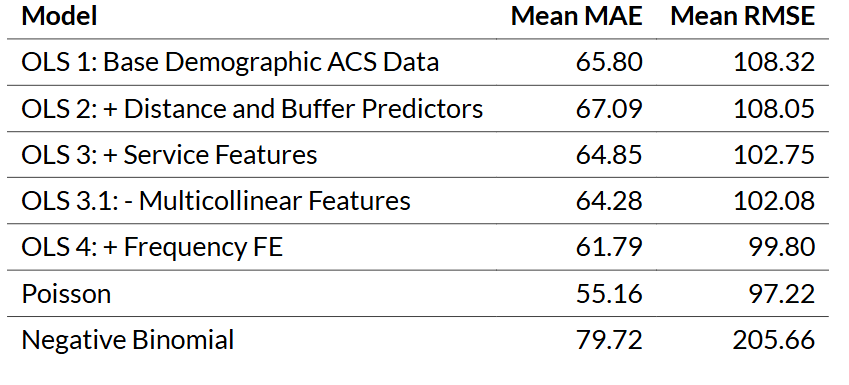
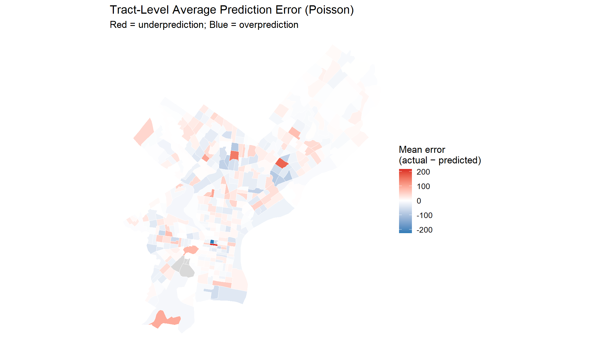

Predicting SEPTA Bus Stop Ridership
Helping Philadelphia Plan Smarter Bus Stops
2026-04-28
The Problem
- Where should SEPTA invest in bus service? The City and SEPTA have to decide where stop-level investments are justified, but lack a consistent way to estimate how much demand a candidate location is likely to serve.
- Who is affected. SEPTA, city planners, and bus riders, especially people who rely on transit for work, school, healthcare, and daily needs.
- Why it matters. Stop placement and route investment shape how easily people can reach jobs and services. Poor decisions either waste public resources or leave high-need areas under-served.
- The decision we want to support. Whether a candidate bus stop location is likely to attract meaningful rider demand, so planners can compare alternatives.
The Solution
- What we predict: average weekday ridership (boardings + alightings) at a potential SEPTA bus stop location.
- Why this outcome: ridership is a direct measure of how much a stop may actually be used.
- Why prediction helps: instead of relying on judgment or simple proximity rules, the city can use the demographic, land-use, and spatial characteristics of a candidate location to estimate likely demand before a stop is built.
- Why our approach is better than current practice: it is systematic and evidence-based. Candidate stops are scored on the same rules, which makes the comparison transparent and repeatable.
Data sources
Bus stop ridership. SEPTA Summer 2025 Bus Stop Summary (OpenDataPhilly). Average daily boardings and alightings from Automatic Passenger Counters; 7,588 stops after clipping to Philadelphia.
Neighborhood characteristics. ACS 2023 5-year (tract level): no-vehicle households, poverty rate, renter share, transit commute share, population density, median income, education.
Employment. LEHD LODES. Total jobs per Census tract.
Built environment & service. OpenDataPhilly +
tigris: schools, hospitals, colleges, parks, businesses, parcels, intersections, crashes, neighborhoods, rail/trolley stops, city boundary.
Current Bus Ridership

How we built each stop’s “context”
Tract attributes joined point-in-polygon (demographics + LODES jobs)
Distances to nearest school, hospital, college, park, rail/trolley stop
½-mile buffer counts (≈ 10-min walk, 2,640 ft): schools, hospitals, parks, businesses, intersections, crashes, other stops, residential / commercial / vacant parcels
Service features: number of routes serving the stop, rail-access flag, SEPTA frequent-route category
Neighborhood fixed effects to absorb unmeasured place-based variation
Methods: why they fit this problem
- OLS (nested 1 → 4): demographics → + spatial → + service → + neighborhood / frequency fixed effects. Easy to interpret and shows which feature groups actually move accuracy.
- Poisson regression: the natural fit for non-negative count outcomes.
- Negative Binomial: relaxes the Poisson equal-variance assumption when the data are overdispersed.
- Validation: Leave-One-Group-Out CV by neighborhood. Every neighborhood is held out in turn. This is an honest test of whether the model can predict in a place it has never trained on.
Model Features Included
Outcome - Weekday total ridership
Demographic + socioeconomic - No-vehicle household share - Poverty rate - Renter share - Transit commute share - Bachelor’s degree share - Population density - Median income
Access + nearby destinations - Distance to nearest college, school, hospital, park, and rail station - Rail access indicator
Built environment + activity - Businesses within 1/2 mile - Crashes within 1/2 mile - Other bus stops within 1/2 mile - Vacant parcels within 1/2 mile
Service + place controls - Number of routes - Service frequency - Neighborhood fixed effects
Model performance (cross-validated)

Poisson has the lowest cross-validated error (MAE ≈ 55, RMSE ≈ 97), so we use it as the main prediction model. It fits the outcome type well because weekday ridership is a non-negative count. We still interpret Poisson cautiously because the high dispersion parameter shows that ridership is more uneven than a standard Poisson model assumes. OLS 4 is the strongest linear model (MAE ≈ 62, RMSE ≈ 100). Its performance improves after adding service frequency and neighborhood fixed effects, which capture service intensity and local place-based differences. This is the more conservative interpretation tool.
Where the model is strong, and where it isn’t

Citywide, the tract-level average errors are relatively small. The Red areas indicate tracts where actual ridership was higher than the Poisson model predicted, suggesting that the model may be missing localized demand factors such as transfer activity, institutional destinations, or commercial corridors. The Blue areas indicate tracts where actual ridership was lower than predicted, which may reflect local conditions not fully captured by the model, such as weaker pedestrian access, stop placement issues, or service-quality differences.
Limitations
Existing-stops only. The model is built on stops that already exist, so it may miss real-world factors that matter for a brand-new stop: route design, stop spacing, curb space, accessibility, safety conditions.
Limited time period. This analysis uses only Summer 2025 ridership data, so the model captures ridership patterns during one specific season rather than year-round demand.
Poisson overdispersion violates the variance assumption. Predictions are reasonable, but coefficient-level inference (significance, uncertainty) should not be over-read.
Missing factors: schedule frequency by time of day, sidewalk and shelter quality, real-time reliability, special-event demand, rider safety perceptions.
Bias considerations
The model can perpetuate historical service gaps. If some neighborhoods have historically had weaker service or fewer investments, observed ridership there is suppressed, and the model can learn to read low ridership as low need.
Ridership ≠ community need. Low ridership in an area does not always mean low transit demand. Some neighborhoods may have few riders because existing service is limited. In those cases, the model may underestimate the need for better transit service.
Equity consequence. Used uncritically, the tool could direct investment toward neighborhoods that already look like high-ridership stops, and away from places that may need transit most.
What this means in practice: results must be read alongside equity indicators and community input, not as a stand-alone score.
Implementation: How the city would actually use this
Use as a screening tool, not a decision rule. For each proposed stop location, the model can estimate likely ridership based on surrounding demographics. Locations with stronger predicted demand should then be reviewed through engineering, equity, and operations criteria before any final decision is made.
Data the city already has (existing stop ridership, GIS stop locations, ACS / land-use / spatial layers) is enough to refresh the model annually as conditions change.
Costs vs. Benefits. Costs are data prep, GIS work, model maintenance, and staff time. Benefits are more consistent, transparent comparison of candidate locations and stronger targeting of limited transit dollars.
Safeguards. Pair predictions with equity, safety, accessibility, and route-operations review. Low predicted ridership is not a reason to dismiss a candidate if it serves transit-dependent populations or closes a service gap.
Thank You!